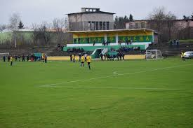
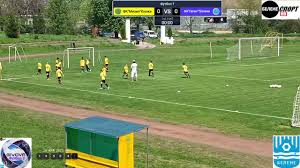
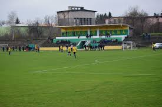
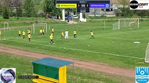

Sports Weekend Recap
 



Knezha’s local teams participated in a weekend of regional sports competitions. The football team won their match 3-1, while volleyball and track events brought in medals as well.
The town praised the youth participation and sportsmanship. Plans for a new autumn tournament are already under discussion.